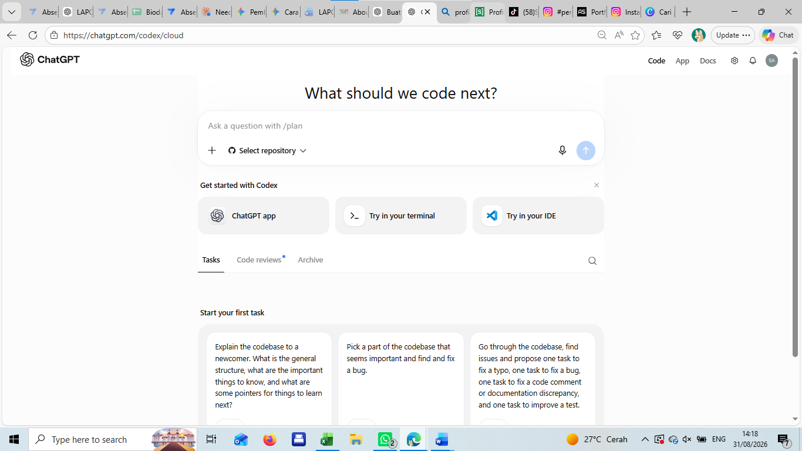

01
ABSENSI PKL
Aplikasi untuk pencatatan kehadiran dan monitoring kegiatan PKL.
Pelajar Teknik Jaringan Komputer dan Telekomunikasi yang tertarik pada networking, aplikasi digital, desain, dan pengembangan project.
Lihat Project →Tentang Saya
Saya Siti Awangsih, siswi Teknik Jaringan Komputer dan Telekomunikasi (TJKT) di SMK Negeri 1 Klari. Saya tertarik pada teknologi, jaringan komputer, aplikasi digital, dan desain. Saya senang belajar melalui praktik, mencoba hal baru, menemukan solusi, dan mengubah ide menjadi sesuatu yang nyata.
JURUSAN
TJKT
FOKUS
Networking & Digital Project
Aplikasi untuk pencatatan kehadiran dan monitoring kegiatan PKL.
Aplikasi untuk membantu pengelolaan dan pengecekan data surat jalan.
Website personal untuk menampilkan karya dan perjalanan belajar.
Berbagai project desain digital untuk kebutuhan visual dan komunikasi.
Simulasi dan praktik konfigurasi jaringan untuk memahami networking.
Memperoleh pengalaman langsung di lingkungan kerja serta menerapkan kemampuan teknologi, administrasi, dan pengembangan project digital.
Belajar mengenai jaringan komputer, perangkat jaringan, troubleshooting, aplikasi digital, dan berbagai project teknologi.
Saya terbuka untuk berdiskusi, berbagi project, atau berkenalan dengan orang-orang yang tertarik pada teknologi dan dunia digital.
Klik icon untuk membuka kontak →